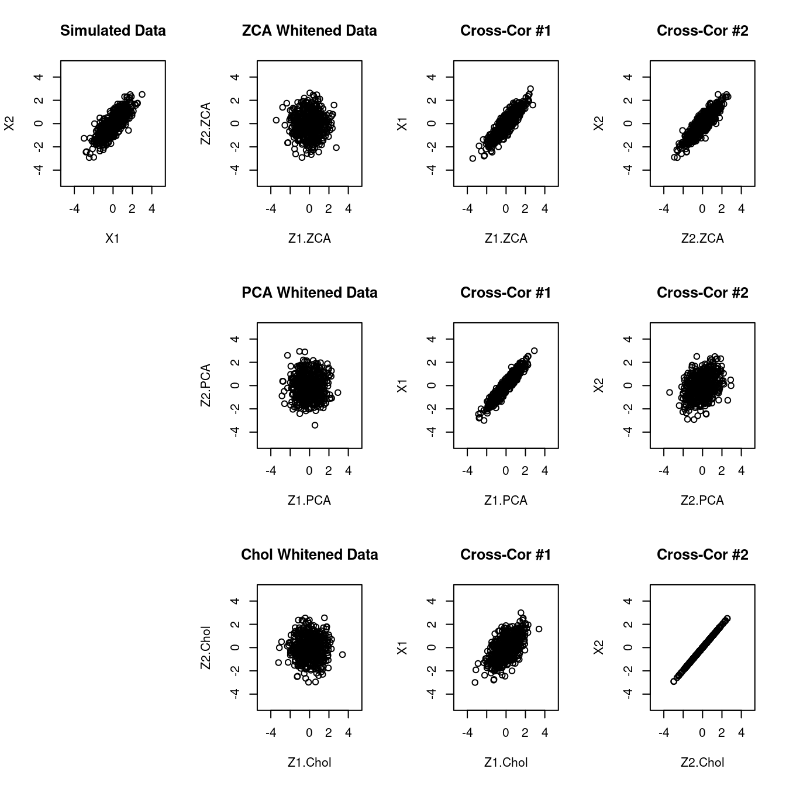
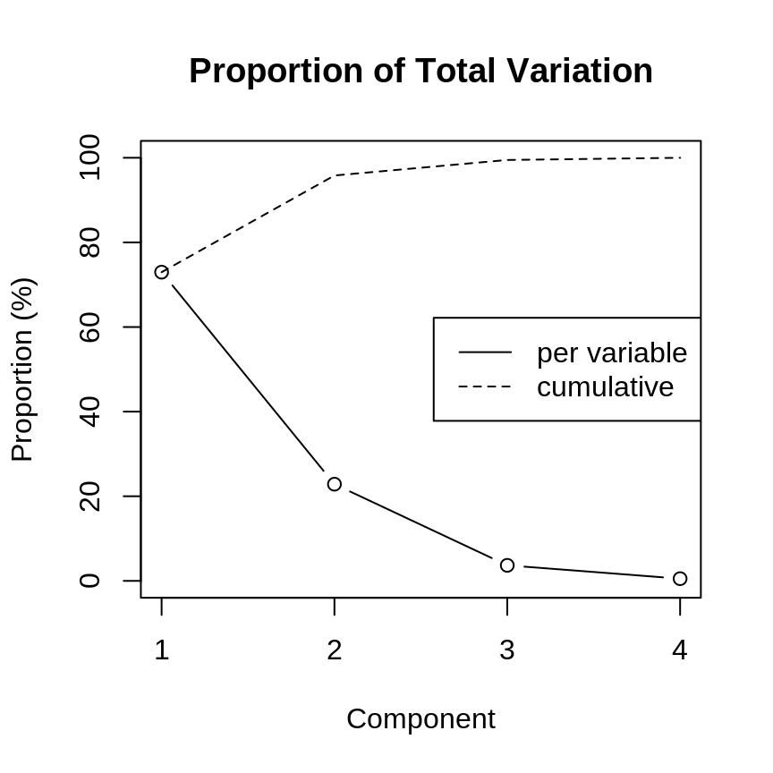
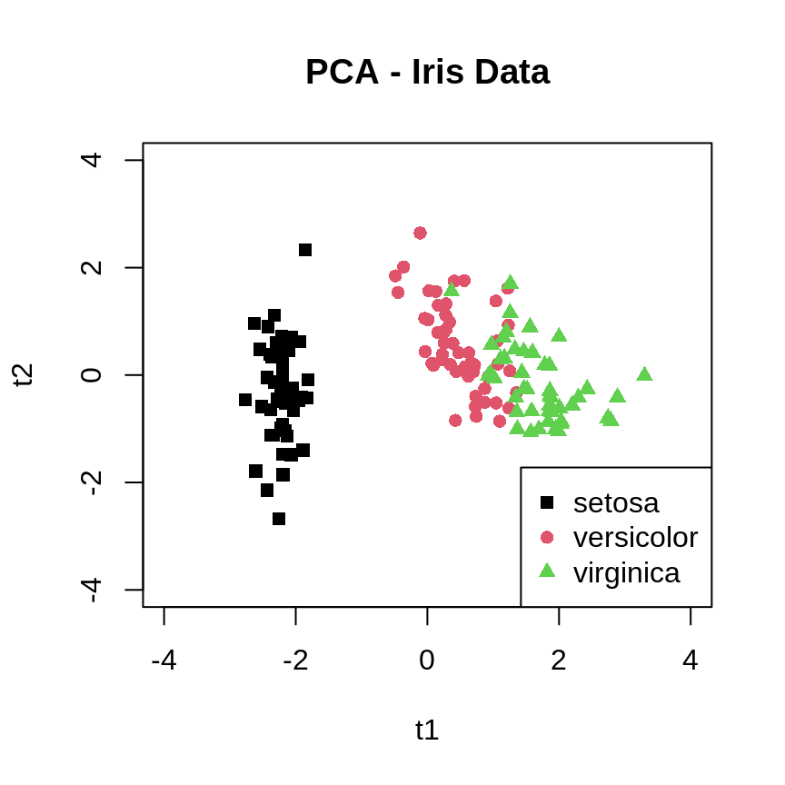
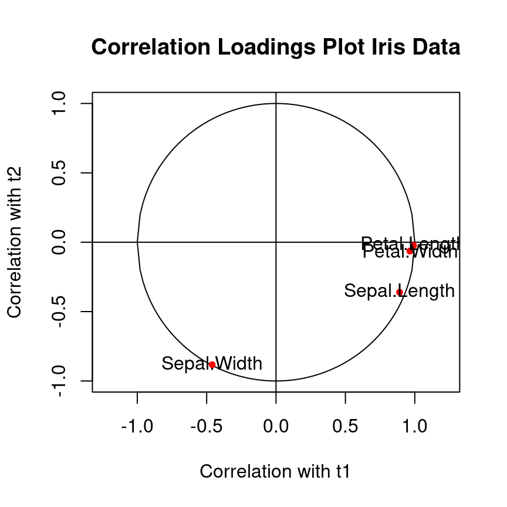

2 Transformations and dimension reduction
Motivation: In the following we study transformations of random vectors and their distributions. These transformation are very important since they either transform simple distributions into more complex distributions or allow to simplify complex models. In machine learning invertible mappings of transformations for probability distributions are known as “normalising flows” (these play a key role e.g. in neural networks).
2.1 Linear Transformations
2.1.1 Location-scale transformation
Also known as affine transformation.
\[\boldsymbol y= \underbrace{\boldsymbol a}_{\text{location parameter}}+\underbrace{\boldsymbol B}_{\text{scale parameter}} \boldsymbol x\space\] \[\boldsymbol y: m \times 1 \text{ random vector}\] \[\boldsymbol a: m \times 1 \text{ vector, location parameter}\] \[\boldsymbol B: m \times d \text{ matrix, scale parameter }, m \geq 1\] \[\boldsymbol x: d \times 1 \text{ random vector}\]
\[\begin{align*} \begin{array}{ll} \text{E}(\boldsymbol x)=\boldsymbol \mu\\ \text{Var}(\boldsymbol x)=\boldsymbol \Sigma\\ \end{array} \Longrightarrow \begin{array}{ll} \text{E}(\boldsymbol y)=\boldsymbol a+ \boldsymbol B\boldsymbol \mu\\ \text{Var}(\boldsymbol y)= \boldsymbol B\boldsymbol \Sigma\boldsymbol B^T \\ \end{array} \end{align*}\]
Special cases/examples:
- Univariate case (\(d=1, m=1\))
- \(\text{E}(y)=a+b\mu\)
- \(\text{Var}(y)=b^2\sigma^2\)
- Sum of two random univariate variables
\(y = x_1 + x_2\), i.e. \(a=0\) and \(\boldsymbol B=(1,1)\)- \(\text{E}(x_1+x_2)=\mu_1+\mu_2\)
- \(\text{Var}(x_1+x_2) = (1,1)\begin{pmatrix} \sigma^2_1 & \sigma_{12}\\ \sigma_{21} & \sigma^2_2 \end{pmatrix} \begin{pmatrix} 1\\ 1 \end{pmatrix} = \sigma^2_1+\sigma^2_2+2\sigma_{12} = \text{Var}(x_1)+\text{Var}(x_2)+2\text{Cov}(x_1,x_2)\)
- \(\text{E}(x_1+x_2)=\mu_1+\mu_2\)
- \(y_1=a_1+b_1 x_1\) and \(y_2=a_2+b_2 x_2\), i.e. \(\boldsymbol a= \begin{pmatrix} a_1\\ a_2 \end{pmatrix}\) and \(\boldsymbol B= \begin{pmatrix}b_1 & 0\\ 0 & b_2\end{pmatrix}\)
- \(\text{E}(\boldsymbol y)=\begin{pmatrix} a_1+b_1 \mu_1\\ a_2+b_2 \mu_2 \end{pmatrix}\)
- \(\text{Var}(\boldsymbol y) = \begin{pmatrix} b_1 & 0\\ 0 & b_2 \end{pmatrix} \begin{pmatrix} \sigma^2_1 & \sigma_{12}\\ \sigma_{21} & \sigma^2_2 \end{pmatrix} \begin{pmatrix} b_1 & 0\\ 0 & b_2 \end{pmatrix} = \begin{pmatrix} b^2_1\sigma^2_1 & b_1b_2\sigma_{12}\\ b_1b_2\sigma_{21} & b^2_2\sigma^2_2 \end{pmatrix}\)
i.e. \(\text{Cov}(a_1+b_1 x_1,a_2+b_2 x_2) = b_1 b_2\text{Cov}(x_1,x_2)\)
- \(\text{E}(\boldsymbol y)=\begin{pmatrix} a_1+b_1 \mu_1\\ a_2+b_2 \mu_2 \end{pmatrix}\)
2.1.2 Invertible location-scale transformation
If \(m=d\) and \(\det(\boldsymbol B) \neq 0\) then we get an invertible transformation: \[\boldsymbol y= \boldsymbol a+ \boldsymbol B\boldsymbol x\] \[\boldsymbol x= \boldsymbol B^{-1}(\boldsymbol y-\boldsymbol a)\]
Transformation of density: \(\boldsymbol x\sim F_{\boldsymbol x}\) with density \(f_{\boldsymbol x}(\boldsymbol x)\)
\(\Longrightarrow\) \(\boldsymbol y\sim F_{\boldsymbol y}\) with density \[ f_{\boldsymbol y}(\boldsymbol y)=|\det(\boldsymbol B)|^{-1} f_{\boldsymbol x} \left( \boldsymbol B^{-1}(\boldsymbol y-\boldsymbol a)\right)\]
We assume a positive definite and thus invertible \(\boldsymbol \Sigma\), so that the inverse principal matrix square root \(\boldsymbol \Sigma^{-1/2}\) can be computed, and the transformation itself is invertible.
\[\boldsymbol a= - \boldsymbol \Sigma^{-1/2} \boldsymbol \mu\] \[\boldsymbol B= \boldsymbol \Sigma^{-1/2}\] \[\text{E}(\boldsymbol x)=\boldsymbol \mu\text{ and } \text{Var}(\boldsymbol x)=\boldsymbol \Sigma\] \[\Longrightarrow\text{E}(\boldsymbol y) = \boldsymbol 0\text{ and } \text{Var}(\boldsymbol y) = \boldsymbol I_d\] Mahalanobis transformation performs three functions:
- Centering (\(-\boldsymbol \mu\))
- Standardisation \(\text{Var}(y_i)=1\)
- Decorrelation \(\text{Cor}(y_i,y_j)=0\) for \(i \neq j\)
Univariate case (\(d=1\))
\[y = \frac{x-\mu}{\sigma}\]
= centering + standardisation
The Mahalanobis transformation appears implicitly in many places in multivariate statistics, e.g. in the multivariate normal density.
It is a particular example of a whitening transformation (of which there are infinitely many, see later chapters).
This transformation is the inverse of the Mahalanobis transformation. As the Mahalanobis transform is a particular whitening transform the inverse transform is sometimes called the Mahalanobis colouring transformation.
\[\boldsymbol a=\boldsymbol \mu\] \[\boldsymbol B=\boldsymbol \Sigma^{1/2}\]
\[\text{E}(\boldsymbol x)=\boldsymbol 0\text{ and } \text{Var}(\boldsymbol x)=\boldsymbol I_d\] \[\Longrightarrow\text{E}(\boldsymbol y) = \boldsymbol \mu\text{ and } \text{Var}(\boldsymbol y) = \boldsymbol \Sigma\] Assume \(\boldsymbol x\) is multivariate standard normal \(\boldsymbol x\sim N_d(\boldsymbol 0,\boldsymbol I_d)\) with density \[f_{\boldsymbol x}(\boldsymbol x) = (2\pi)^{-d/2}\exp\left( -\frac{1}{2} \boldsymbol x^T \boldsymbol x\right)\] Then the density after applying this inverse Mahalanobis transform is
\[f_{\boldsymbol y}(\boldsymbol y) = |\det(\boldsymbol \Sigma^{1/2})|^{-1} (2\pi)^{-d/2} \exp\left(-\frac{1}{2}(\boldsymbol y-\boldsymbol \mu)^T\boldsymbol \Sigma^{-1/2} \,\boldsymbol \Sigma^{-1/2}(\boldsymbol y-\boldsymbol \mu)\right)\]
\[= (2\pi)^{-d/2} \det(\boldsymbol \Sigma)^{-1/2} \exp\left(-\frac{1}{2}(\boldsymbol y-\boldsymbol \mu)^T\boldsymbol \Sigma^{-1}(\boldsymbol y-\boldsymbol \mu)\right)\] \(\Longrightarrow\) \(\boldsymbol y\) has multivariate normal density!!
Application: e.g. random number generation: draw from \(N_d(\boldsymbol 0,\boldsymbol I_d)\) (easy!) then convert to multivariate normal by tranformation.
2.2 Nonlinear transformations
2.2.1 General transformation
\[\boldsymbol y= \boldsymbol h(\boldsymbol x)\] with \(\boldsymbol h\) an arbitrary vector-valued function
- linear case: \(\boldsymbol h(\boldsymbol x) = \boldsymbol a+\boldsymbol B\boldsymbol x\)
2.2.2 Delta method
Assume that we know the mean \(\text{E}(\boldsymbol x)=\boldsymbol \mu\) and variance \(\text{Var}(\boldsymbol x)=\boldsymbol \Sigma\) of \(\boldsymbol x\). Is it possible to say something about the mean and variance of the transformed random variable \(\boldsymbol y\)? \[ \text{E}(\boldsymbol y)= \text{E}(\boldsymbol h(\boldsymbol x))= ? \] \[ \text{Var}(\boldsymbol y) = \text{Var}(\boldsymbol h(\boldsymbol x))= ? \\ \]
In general, for a transformation \(\boldsymbol h(\boldsymbol x)\) the exact mean and variance of the transformed variable cannot be obtained analytically.
However, we can find a linear approximation and then compute its mean and variance. This approximation is called the “Delta Method”, or the “law of propagation of errors”, and is credited to Gauss.1
Linearisation of \(\boldsymbol h(\boldsymbol x)\) is achieved by a Taylor series approximation of first order of \(\boldsymbol h(\boldsymbol x)\) around \(\boldsymbol x_0\): \[\boldsymbol h(\boldsymbol x) \approx \boldsymbol h(\boldsymbol x_0) + \underbrace{\boldsymbol J_{\boldsymbol h}(\boldsymbol x_0)}_{\text{Jacobi matrix}}(\boldsymbol x-\boldsymbol x_0) = \underbrace{\boldsymbol h(\boldsymbol x_0) -\boldsymbol J_{\boldsymbol h}(\boldsymbol x_0)\, \boldsymbol x_0}_{\boldsymbol a} + \underbrace{\boldsymbol J_{\boldsymbol h}(\boldsymbol x_0)}_{\boldsymbol B} \boldsymbol x\]
\(\nabla\), the nabla operator, is the row vector \((\frac{\partial}{\partial x_1},...,\frac{\partial}{\partial x_d})\), which when applied to univariate \(h\) gives the gradient:
\[\nabla h(\boldsymbol x) = \left(\frac{\partial h}{\partial x_1},...,\frac{\partial h}{\partial x_d}\right)\]
The Jacobi matrix is the generalisation of the gradient if \(\boldsymbol h\) is vector-valued:
\[\boldsymbol J_{\boldsymbol h}(\boldsymbol x) = \begin{pmatrix}\nabla h_1(\boldsymbol x)\\ \nabla h_2(\boldsymbol x) \\ \vdots \\ \nabla h_m(\boldsymbol x) \end{pmatrix} = \begin{pmatrix} \frac{\partial h_1}{\partial x_1} & \dots & \frac{\partial h_1}{\partial x_d}\\ \vdots & \ddots & \vdots \\ \frac{\partial h_m}{\partial x_1} & \dots & \frac{\partial h_m}{\partial x_d} \end{pmatrix}\]
First order approximation of \(\boldsymbol h(\boldsymbol x)\) around \(\boldsymbol x_0=\boldsymbol \mu\) yields \(\boldsymbol a= \boldsymbol h(\boldsymbol \mu) - \boldsymbol J_{\boldsymbol h}(\boldsymbol \mu)\, \boldsymbol \mu\) \(\boldsymbol B= \boldsymbol J_{\boldsymbol h}(\boldsymbol \mu)\) and leads directly to the multivariate Delta method:
\[\text{E}(\boldsymbol y)\approx\boldsymbol h(\boldsymbol \mu)\] \[\text{Var}(\boldsymbol y)\approx \boldsymbol J_{\boldsymbol h}(\boldsymbol \mu) \, \boldsymbol \Sigma\, \boldsymbol J_{\boldsymbol h}(\boldsymbol \mu)^T\]
The univariate Delta method is a special case: \[\text{E}(y) \approx h(\mu)\] \[\text{Var}(y)\approx \sigma^2 h'(\mu)^2\]
Note that the Delta approximation breaks down if \(\text{Var}(\boldsymbol y)\) is singular, for example if the first derivative (or gradient or Jacobi matrix) at \(\boldsymbol \mu\) is zero.
Example 2.3 Variance of the odds ratio
The proportion \(\hat{p} = \frac{n_1}{n}\) resulting from \(n\) repeats of a Bernoulli experiment has expectation \(\text{E}(\hat{p})=p\) and variance \(\text{Var}(\hat{p}) = \frac{p (1-p)}{n}\). What are the (approximate) mean and the variance of the corresponding odds ratio \(\widehat{OR}=\frac{\hat{p}}{1-\hat{p}}\)?
With \(h(x) = \frac{x}{1-x}\), \(\widehat{OR} = h(\hat{p})\) and \(h'(x) = \frac{1}{(1-x)^2}\) we get using the Delta method \(\text{E}( \widehat{OR} ) \approx h(p) = \frac{p}{1-p}\) and \(\text{Var}( \widehat{OR} )\approx h'(p)^2 \text{Var}( \hat{p} ) = \frac{p}{n (1-p)^3}\).Example 2.4 Log-transform as variance stabilisation
Assume \(x\) has some mean \(\text{E}(x)=\mu\) and variance \(\text{Var}(x) = \sigma^2 \mu^2\), i.e. the standard deviation \(\text{SD}(x)\) is proportional to the mean \(\mu\). What are the (approximate) mean and the variance of the log-transformed variable \(\log(x)\)?
With \(h(x) = \log(x)\) and \(h'(x) = \frac{1}{x}\) we get using the Delta method \(\text{E}( \log(x) ) \approx h(\mu) = \log(\mu)\) and \(\text{Var}( \log(x) )\approx h'(\mu)^2 \text{Var}( x ) = \left(\frac{1}{\mu} \right)^2 \sigma^2 \mu^2 = \sigma^2\). Thus, after applying the log-transform the variance does not depend any more on the mean!2.2.3 Transformation of densities under general invertible transformation
Assume \(\boldsymbol h(\boldsymbol x) = \boldsymbol y(\boldsymbol x)\) is invertible: \(\boldsymbol h^{-1}(\boldsymbol y)=\boldsymbol x(\boldsymbol y)\)
\(\boldsymbol x\sim F_{\boldsymbol x}\) with probability density function \(f_{\boldsymbol x}(\boldsymbol x)\)
The density \(f_{\boldsymbol y}(\boldsymbol y)\) of the transformed random vector \(\boldsymbol y\) is then given by
\[f_{\boldsymbol y}(\boldsymbol y) = |\det\left( \boldsymbol J_{\boldsymbol x}(\boldsymbol y) \right)| \,\,\, f_{\boldsymbol x}\left( \boldsymbol x(\boldsymbol y) \right)\]
where \(\boldsymbol J_{\boldsymbol x}(\boldsymbol y)\) is the Jacobi matrix of the inverse transformation
Special cases:
- Univariate version: \(f_y(y) = |\frac{dx}{dy}| \, f_x\left(x(y)\right)\)
- Linear transformation \(\boldsymbol h(\boldsymbol x) = \boldsymbol a+ \boldsymbol B\boldsymbol x\), with \(\boldsymbol x(\boldsymbol y) = \boldsymbol B^{-1}(\boldsymbol y-\boldsymbol a)\)
and \(\boldsymbol J_{\boldsymbol x}(\boldsymbol y) = \boldsymbol B^{-1}\):
\(f_{\boldsymbol y}(\boldsymbol y)=|\det(\boldsymbol B)|^{-1} f_{\boldsymbol x} \left( \boldsymbol B^{-1}(\boldsymbol y-\boldsymbol a)\right)\)
2.2.4 Normalising flows
In machine learning (sequences of) invertible nonlinear transformations are known as “normalising flows”. They are used both in a generative way (building complex models from simple models) and also in a simplification and dimension reduction context.
In this module we will focus mostly on linear transformations as these underpin much of classical multivariate statistics, but it is important to keep in mind for later study the importance of nonlinear transformations —see, e.g, the review paper by Kobyzev et al. “Normalizing Flows: Introduction and Ideas”, available from https://arxiv.org/abs/1908.09257 .
2.3 Whitening transformations
2.3.1 Overview
The Mahalanobis transform (also know as “zero-phase component analysis” or short ZCA transform in machine learning) is a specific example of a whitening transformation. These constitute an important and widely used class of invertible location-scale transformations.
Terminology: whitening refers to the fact that after the transformation the covariance matrix is spherical, isotrop, white (\(\boldsymbol I_d\))
Whitening is useful in preprocessing, to turn multivariate problems into simple univariate models and some reduce the dimension in an optimal way.
In so-called latent variable models whitening procedures link observed and latent variables (which usually are uncorrelated and standardised random variables):
\[\begin{align*} \begin{array}{cl} \text{Whitening} \\ \downarrow \end{array} \begin{array}{ll} \boldsymbol x\\ \uparrow \\ \boldsymbol z\\ \end{array} \begin{array}{ll} \text{Observed variable (can be measured), external, typically correlated} \\ \space \\ \text{Unobserved "latent" variable, internal, typically not correlated} \\ \end{array} \end{align*}\]
2.3.2 General whitening transformation
Starting point:
Random vector \(\boldsymbol x\sim F_{\boldsymbol x}\) (not necessarily from multivariate normal).
The random variance \(\boldsymbol x\) has some mean \(\text{E}(\boldsymbol z)=\boldsymbol \mu\) and a positive definite (invertible) covariance matrix \(\text{Var}(\boldsymbol x) = \boldsymbol \Sigma\). The covariance can be split into positive variances \(\boldsymbol V\) and a positive definite invertible correlation matrix \(\boldsymbol P\) so that \(\boldsymbol \Sigma= \boldsymbol V^{1/2} \boldsymbol P\boldsymbol V^{1/2}\).
Whitening transformation:
\[\underbrace{\boldsymbol z}_{d \times 1 \text{ vector }} = \underbrace{\boldsymbol W}_{d \times d \text{ whitening matrix }} \underbrace{\boldsymbol x}_{d \times 1 \text{ vector }}\] Objective: choose \(\boldsymbol W\) so that \(\text{Var}(\boldsymbol z)=\boldsymbol I_d\)
For Mahalanobis/ZCA whitening we already know that \(\boldsymbol W^{\text{ZCA}}=\boldsymbol \Sigma^{-1/2}\).
In general, the whitening matrix \(\boldsymbol W\) needs to satisfy a constraint: \[ \begin{array}{lll} & \text{Var}(\boldsymbol z) & = \boldsymbol I_d \\ \Longrightarrow & \text{Var}(\boldsymbol W\boldsymbol x) &= \boldsymbol W\boldsymbol \Sigma\boldsymbol W^T = \boldsymbol I_d \\ \Longrightarrow & \boldsymbol W\, \boldsymbol \Sigma\, \boldsymbol W^T \boldsymbol W= \boldsymbol W& \\ \end{array} \] \[\Longrightarrow \text{constraint on whitening matrix: } \boldsymbol W^T \boldsymbol W= \boldsymbol \Sigma^{-1}\]
Clearly, the ZCA whitening matrix satisfies this constraint: \((\boldsymbol W^{ZCA})^T \boldsymbol W^{ZCA} = \boldsymbol \Sigma^{-1/2}\boldsymbol \Sigma^{-1/2}=\boldsymbol \Sigma^{-1}\)
2.3.3 Solution of whitening constraint (covariance-based)
A general way to specify a valid whitening matrix is \[ \boldsymbol W= \boldsymbol Q_1 \boldsymbol \Sigma^{-1/2} \] where \(\boldsymbol Q_1\) is an orthogonal matrix
Recall that an orthogonal matrix \(\boldsymbol Q\) has the property that \(\boldsymbol Q^{-1} = \boldsymbol Q^T\) and and as a consequence \(\boldsymbol Q^T \boldsymbol Q= \boldsymbol Q\boldsymbol Q^T = \boldsymbol I\).
As a result, the above \(\boldsymbol W\) satisfies the whitening constraint:
\[\boldsymbol W^T \boldsymbol W= \boldsymbol \Sigma^{-1/2}\underbrace{\boldsymbol Q_1^T \boldsymbol Q_1}_{\boldsymbol I}\boldsymbol \Sigma^{-1/2}=\boldsymbol \Sigma^{-1}\]
Note the converse is also true: any whitening whitening matrix, i.e. any \(\boldsymbol W\) satisfying the whitening constraint, can be written in the above form as \(\boldsymbol Q_1 = \boldsymbol W\boldsymbol \Sigma^{1/2}\) is orthogonal by construction.
\(\Longrightarrow\) instead of choosing \(\boldsymbol W\), we choose the orthogonal matrix \(\boldsymbol Q_1\)!
- recall that orthogonal matrices geometrically represent rotations (plus reflections).
- it is now clear that there are infinitely many whitening procedures, because there are infinitely many rotations! This also means we need to find ways to choose/select among whitening procedures.
- for the Mahalanobis/ZCA transformation \(\boldsymbol Q_1^{\text{ZCA}}=\boldsymbol I\)
- whitening can be interpreted as Mahalanobis transform followed by rotation
2.3.4 Another solution (correlation-based)
Instead of working with the covariance matrix \(\boldsymbol \Sigma\), we can express \(\boldsymbol W\) also in terms of the corresponding correlation matrix \(\boldsymbol P= (\rho_{ij}) = \boldsymbol V^{-1/2} \boldsymbol \Sigma\boldsymbol V^{-1/2}\) where \(\boldsymbol V^{1/2}\) is the diagonal matrix containing the variances.
Specifically we can specify the whitening matrix as \[\boldsymbol W= \boldsymbol Q_2 \boldsymbol P^{-1/2} \boldsymbol V^{-1/2}\]
It is easy to verify that this \(\boldsymbol W\) also satisfies the whitening constraint: \[ \begin{split} \boldsymbol W^T \boldsymbol W& = \boldsymbol V^{-1/2}\boldsymbol P^{-1/2}\underbrace{\boldsymbol Q_2^T \boldsymbol Q_2}_{\boldsymbol I}\boldsymbol P^{-1/2} \boldsymbol V^{-1/2} \\ & = \boldsymbol V^{-1/2} \boldsymbol P^{-1} \boldsymbol V^{-1/2} = \boldsymbol \Sigma^{-1} \\ \end{split} \] Conversely, any whitening matrix \(\boldsymbol W\) can also be written in this form as \(\boldsymbol Q_2 = \boldsymbol W\boldsymbol V^{1/2} \boldsymbol P^{1/2}\) is orthogonal by construction.
- Another interpretation of whitening: first standardising (\(\boldsymbol V^{-1/2}\)), then decorrelation (\(\boldsymbol P^{-1/2}\)), followed by rotation (\(\boldsymbol Q_2\))
- for Mahalanobis/ZCA transformation \(\boldsymbol Q_2^{\text{ZCA}} = \boldsymbol \Sigma^{-1/2} \boldsymbol V^{1/2} \boldsymbol P^{1/2}\)
Both forms to write \(\boldsymbol W\) using \(\boldsymbol Q_1\) and \(\boldsymbol Q_2\) are equally valid (and interchangeable).
Note that for the same \(\boldsymbol W\)
\[\boldsymbol Q_1\neq\boldsymbol Q_2 \text{ Two different orthogonal matrices!}\]
and also
\[\underbrace{\boldsymbol \Sigma^{-1/2}}_{\text{Symmetric}}\neq\underbrace{\boldsymbol P^{-1/2}\boldsymbol V^{-1/2}}_{\text{Not Symmetric}}\]
even though
\[\boldsymbol \Sigma^{-1/2}\boldsymbol \Sigma^{-1/2}=\boldsymbol \Sigma^{-1} = \boldsymbol V^{-1/2}\boldsymbol P^{-1/2}\boldsymbol P^{-1/2}\boldsymbol V^{-1/2}\]
2.3.5 Cross-covariance and cross-correlation
A useful criterion to distinguish whitening transformation is to consider the cross-covariance and cross-correlation:
Cross-covariance \(\boldsymbol \Phi= \Sigma_{\boldsymbol z\boldsymbol x}\) between \(\boldsymbol z\) and \(\boldsymbol x\): \[ \begin{split} \boldsymbol \Phi= \text{Cov}(\boldsymbol z,\boldsymbol x) & = \text{Cov}(\boldsymbol W\boldsymbol x,\boldsymbol x)\\ & = \boldsymbol W\boldsymbol \Sigma\\ &= \boldsymbol Q_1 \boldsymbol \Sigma^{-1/2} \boldsymbol \Sigma\\ &= \boldsymbol Q_1\boldsymbol \Sigma^{1/2} \\ \end{split} \] Cross-covariance is linked with \(\boldsymbol Q_1\)! Thus, choosing cross-covariance determines \(\boldsymbol Q_1\) (and vice versa). The whitening matrix expressed in terms of cross-covariance is \(\boldsymbol W= \boldsymbol \Phi\boldsymbol \Sigma^{-1}\).
Cross-correlation \(\boldsymbol \Psi= \boldsymbol P_{\boldsymbol z\boldsymbol x}\) between \(\boldsymbol z\) and \(\boldsymbol x\): \[ \begin{split} \boldsymbol \Psi= \text{Cor}(\boldsymbol z,\boldsymbol x) & = \boldsymbol \Phi\boldsymbol V^{-1/2}\\ & = \boldsymbol W\boldsymbol \Sigma\boldsymbol V^{-1/2}\\ &=\boldsymbol Q_2 \boldsymbol P^{-1/2} \boldsymbol V^{-1/2} \boldsymbol \Sigma\boldsymbol V^{-1/2} \\ & = \boldsymbol Q_2\boldsymbol P^{1/2}\\ \end{split} \] Cross-correlation is linked with \(\boldsymbol Q_2\)! Hence, choosing cross-correlation determines \(\boldsymbol Q_2\) (and vice versa). The whitening matrix expressed in terms of cross-correlation is \(\boldsymbol W= \boldsymbol \Psi\boldsymbol P^{-1} \boldsymbol V^{-1/2}\).
Note that the factorisation of the cross-covariance \(\boldsymbol \Phi=\boldsymbol Q_1\boldsymbol \Sigma^{1/2}\) and the cross-correlation \(\boldsymbol \Psi=\boldsymbol Q_2\boldsymbol P^{1/2}\) into the product of an orthogonal matrix and a positive semi-definite symmetric matrix is the called polar decomposition.
2.3.6 Inverse whitening transformation, loadings, and multiple correlation
Reverse transformation:
Recall that \(\boldsymbol z= \boldsymbol W\boldsymbol x\). Therefore, the reverse transformation going from the whitened to the original variable is \(\boldsymbol x= \boldsymbol W^{-1} \boldsymbol z\). This can be expressed also in terms of cross-covariance and cross-correlation. With \(\boldsymbol W= \boldsymbol Q_1 \boldsymbol \Sigma^{-1/2}\) we get for the inverse \(\boldsymbol W^{-1} = \boldsymbol \Sigma^{1/2} \boldsymbol Q_1^{-1} = \boldsymbol \Sigma^{1/2} \boldsymbol Q_1^{-T} = \boldsymbol \Phi^T\) so that \[ \boldsymbol x= \boldsymbol \Phi^T \boldsymbol z\, . \] Furthermore, since \(\boldsymbol \Psi= \boldsymbol \Phi\boldsymbol V^{-1/2}\) we have \(\boldsymbol W^{-1} = \boldsymbol V^{1/2} \boldsymbol \Psi^T\) and \[ \boldsymbol V^{-1/2} \boldsymbol x= \boldsymbol \Psi^T \boldsymbol z\, . \]
Definition of loadings:
Loadings are the coefficients of the linear transformation from the latent variable back to the observed variable. If the variables are standardised to unit variance then the loadings are also called correlation loadings.
Hence, the cross-covariance matrix plays the role of loadings linking the latent variable \(\boldsymbol z\) with the original \(\boldsymbol x\). Similarly, the cross-correlation matrix are the correlation loadings linking the (already standardised) latent variable \(\boldsymbol z\) with the standardised \(\boldsymbol x\).
Multiple correlation coefficients from \(\boldsymbol z\) to \(\boldsymbol x\):
Consider the backtransformation from \(\boldsymbol z\) to \(\boldsymbol x\). The components of \(\boldsymbol z\) are all uncorrelated. Therefore, we can compute the squared multiple correlation coefficient between each \(x_j\) and \(\boldsymbol z\) as the sum of the squared correlations \(\text{Cor}(z_i, x_j)^2\): \[ \text{Cor}(\boldsymbol z, x_j)^2 = \sum_{i=1}^d \text{Cor}(z_i, x_j)^2 = \sum_{i=1}^d \psi_{ij}^2 \] In vector notation with \(\boldsymbol \Psi= (\psi_{ij})\) we get \[ \begin{split} (\text{Cor}(\boldsymbol z, x_j)^2 )^T &= \text{Diag}(\boldsymbol \Psi^T \boldsymbol \Psi) \\ &= \text{Diag}(\boldsymbol P^{1/2} \boldsymbol Q_2^T \boldsymbol Q_2\boldsymbol P^{1/2}) \\ &= \text{Diag}(\boldsymbol P) \\ &= (1, \ldots, 1)^T\\ \end{split} \] Therefore the column sums of the matrix \((\psi_{ij}^2)\) are all 1 regardless of the choice of \(\boldsymbol Q_2\): \[ \sum_{i=1}^d \psi_{ij}^2 = 1 \text{ for all } j \]
It is easy to understand why we get multiple squared correlations of value 1 — because \(x_j\) is a linear function of the \(z_1, \ldots, z_d\) with no noise term, which means \(x_j\) can be predicted perfectly from \(\boldsymbol z\) with no error.
Multiple correlation coefficients from \(\boldsymbol x\) to \(\boldsymbol z\):
For the original direction going from \(x_1, \ldots, x_d\) to the \(z_i\) the corresponding squared multiple correlations \(\text{Cor}(z_i, \boldsymbol x)^2\) are also 1, but because the \(x_j\) are correlated we cannot simply sum the squared correlations to get \(\text{Cor}(z_i, \boldsymbol x)^2\) but we also need take account of the correlations among the \(\boldsymbol x_j\) (i.e. \(\boldsymbol P\)). In vector notation: \[ \begin{split} (\text{Cor}(z_i, \boldsymbol x)^2 )^T &= \text{Diag}( \boldsymbol \Psi\boldsymbol P^{-1} \boldsymbol \Psi^T) \\ &= \text{Diag}( \boldsymbol Q_2 \boldsymbol P^{1/2} \boldsymbol P^{-1} \boldsymbol P^{1/2} \boldsymbol Q_2^T ) \\ & = \text{Diag}(\boldsymbol I) \\ & = (1, \ldots, 1)^T\\ \end{split} \]
2.4 Natural whitening procedures
Now we discuss several strategies (maximise correlation between individual components, maximise compression, etc.) to arrive at optimal whitening transformation.
This leads to the following “natural” whitening transformations:
- Mahalanobis whitening, also known as ZCA (zero-phase component analysis) whitening in machine learning
- ZCA-cor whitening
- PCA whitening
- PCA-cor whitening
- Cholesky whitening
In the following \(\boldsymbol x_c = \boldsymbol x-\boldsymbol \mu_{\boldsymbol x}\) and \(\boldsymbol z_c = \boldsymbol z-\boldsymbol \mu_{\boldsymbol z}\) denote the mean-centered variables.
2.4.1 ZCA whitening
Aim: remove correlations but otherwise make sure that after whitening \(\boldsymbol z\) does not differ too much from \(\boldsymbol x\). Specifically, each element \(z_i\) should be as close as as possible to the corresponding element \(x_i\): \[ \begin{array}{cc} z_1\leftrightarrow x_1 \\ z_2\leftrightarrow x_2\\ z_3\leftrightarrow x_3 \\ \vdots \end{array} \] One possible way to implement this is to compute the expected squared difference between the two centered random vectors \(\boldsymbol z_c\) and \(\boldsymbol x_c\).
ZCA objective function: minimise \(\text{E}\left((\boldsymbol z_c-\boldsymbol x_c)^T(\boldsymbol z_c-\boldsymbol x_c)\right)\) to find an optimal whitening procedure.
The ZCA objective function can be simplified as follows: \[ \begin{split} & = \text{E}( \boldsymbol z_c^T \boldsymbol z_c ) - 2 \text{E}( \boldsymbol x_c^T \boldsymbol z_c ) + \text{E}(\boldsymbol x_c^T \boldsymbol x_c) \\ & = \text{E}( \text{Tr}( \boldsymbol z_c \boldsymbol z_c^T ) ) - 2 \text{E}( \text{Tr}( \boldsymbol z_c \boldsymbol x_c^T ) ) + \text{E}( \text{Tr}( \boldsymbol x_c \boldsymbol x_c^T ) ) \\ & = \text{Tr}( \text{E}( \boldsymbol z_c \boldsymbol z_c^T ) ) - 2 \text{Tr}( \text{E}( \boldsymbol z_c \boldsymbol x_c^T ) ) + \text{Tr}( \text{E}( \boldsymbol x_c \boldsymbol x_c^T ) ) \\ & = \text{Tr}( \text{Var}(\boldsymbol z) ) - 2 \text{Tr}( \text{Cov}(\boldsymbol z, \boldsymbol x) ) + \text{Tr}( \text{Var}(\boldsymbol x) ) \\ & = d - 2\text{Tr}(\boldsymbol \Phi)+\text{Tr}(\boldsymbol V) \\ \end{split} \] The only term that depends on the whitening transformation is \(-2 \text{Tr}(\boldsymbol \Phi)\) as it is a function of \(\boldsymbol Q_1\). Therefore we can use the following alternative objective:
ZCA equivalent objective: maximise \(\text{Tr}(\boldsymbol \Phi) = \text{Tr}(\boldsymbol Q_1\boldsymbol \Sigma^{1/2})\) to find optimal \(\boldsymbol Q_1\)
This is the sum \(\sum_{i=1}^d \text{Cov}(z_i, x_i)\) of all covariances between corresponding elements in \(\boldsymbol z\) and \(\boldsymbol x\).
Solution:
- Apply eigendecomposition to \(\boldsymbol \Sigma= \boldsymbol U\boldsymbol \Lambda\boldsymbol U^T\). Note that \(\boldsymbol \Lambda\) is diagonal with positive entries \(\lambda_i > 0\) as \(\boldsymbol \Sigma\) is positive definite.
- The objective function becomes \[ \begin{split} \text{Tr}(\boldsymbol Q_1\boldsymbol \Sigma^{1/2}) &= \text{Tr}(\boldsymbol Q_1 \boldsymbol U\boldsymbol \Lambda^{1/2} \boldsymbol U^T ) \\ &= \text{Tr}(\boldsymbol \Lambda^{1/2} \, \boldsymbol U^T \boldsymbol Q_1 \boldsymbol U) \\ & = \text{Tr}(\boldsymbol \Lambda^{1/2} \, \boldsymbol B) \\ & = \sum_{i=1}^d \lambda_i b_{ii}. \end{split} \] Note that the product of the orthogonal matrices \(\boldsymbol B= \boldsymbol U^T \boldsymbol Q_1 \boldsymbol U\) is itself an orthogonal matrix, and \(\boldsymbol Q_1 = \boldsymbol U\boldsymbol B\boldsymbol U^T\).
- As \(\lambda_i > 0\) the objective function is maximised for the orthogonal matrix \(\boldsymbol B=\boldsymbol I\).
- Thus, the optimal \(\boldsymbol Q_1\) matrix is \[\boldsymbol Q_1^{\text{ZCA}}=\boldsymbol I\]
The corresponding whitening matrix for ZCA is \[ \boldsymbol W^{\text{ZCA}} = \boldsymbol \Sigma^{-1/2} \] and the cross-covariance matrix is \[ \boldsymbol \Phi^{\text{ZCA}} = \boldsymbol \Sigma^{1/2} \] and the cross-correlation matrix \[ \boldsymbol \Psi^{\text{ZCA}} = \boldsymbol \Sigma^{1/2} \boldsymbol V^{-1/2} \]
Note that for ZCA \(\text{Cov}(z_i, x_i) > 0\) and \(\text{Cor}(z_i, x_i) > 0\) so two corresponding components \(z_i\) and \(x_i\) are always positively correlated!
Summary:
- ZCA/Mahalanobis transform is the unique transformation that minimises the expected total squared component-wise difference between \(\boldsymbol x_c\) and \(\boldsymbol z_c\).
- As corresponding components in the whitened and original variables are always positively correlated this facilitates interpretation of the whitening variables.
- Use ZCA aka Mahalanobis whitening if you want to “just” remove correlations.
2.4.2 ZCA-Cor whitening
Aim: same as above but remove scale in \(\boldsymbol x\) first before comparing to \(\boldsymbol z\)
ZCA-cor objective function: minimise \(\text{E}\left((\boldsymbol z_c-\boldsymbol V^{-1/2}\boldsymbol x_c)^T(\boldsymbol z_c-\boldsymbol V^{-1/2}\boldsymbol x_c)\right)\) to find an optimal whitening procedure.
This can be simplified as follows: \[ \begin{split} & = \text{E}( \boldsymbol z_c^T \boldsymbol z_c ) - 2 \text{E}( \boldsymbol x_c^T \boldsymbol V^{-1/2} \boldsymbol z_c ) + \text{E}(\boldsymbol x_c^T \boldsymbol V^{-1} \boldsymbol x_c) \\ & = \text{Tr}( \text{Var}(\boldsymbol z) ) - 2 \text{Tr}( \text{Cor}(\boldsymbol z, \boldsymbol x) ) + \text{Tr}( \text{Cor}(\boldsymbol x, \boldsymbol x) ) \\ & = d - 2\text{Tr}(\boldsymbol \Psi)+ d \\ & = 2d - 2\text{Tr}(\boldsymbol \Psi) \end{split} \] The only term that depends on the whitening transformation via \(\boldsymbol Q_2\) is \(-2 \text{Tr}(\boldsymbol \Psi)\) so we can use the following alternative objective instead:
ZCA-cor equivalent objective: maximise \(\text{Tr}(\boldsymbol \Psi)=\text{Tr}(\boldsymbol Q_2\boldsymbol P^{1/2})\) to find optimal \(\boldsymbol Q_2\)
This is the sum \(\sum_{i=1}^d \text{Cor}(z_i, x_i)\) of all correlations between corresponding elements in \(\boldsymbol z\) and \(\boldsymbol x\).
Solution: same as above for ZCA but using correlation instead of covariance:
- Apply eigendecomposition to \(\boldsymbol P= \boldsymbol G\boldsymbol \Theta\boldsymbol G^T\) with positive diagonal \(\boldsymbol \Theta\).
- The objective function becomes \(\text{Tr}(\boldsymbol Q_2\boldsymbol P^{1/2}) ) = \text{Tr}( \boldsymbol \Theta^{1/2} \boldsymbol G^T \boldsymbol Q_2 \boldsymbol G)\)
- This is maximised for \[\boldsymbol Q_2^{\text{ZCA-Cor}}=\boldsymbol I\]
The corresponding whitening matrix for ZCA-cor is \[\boldsymbol W^{\text{ZCA-Cor}} = \boldsymbol P^{-1/2}\boldsymbol V^{-1/2}\] and the cross-covariance matrix is \[ \boldsymbol \Phi^{\text{ZCA-Cor}} = \boldsymbol P^{1/2} \boldsymbol V^{1/2} \] and the cross-correlation matrix is \[ \boldsymbol \Psi^{\text{ZCA-Cor}} = \boldsymbol P^{1/2} \] As a result for ZCA-cor \(\text{Cov}(z_i, x_i) > 0\) and \(\text{Cor}(z_i, x_i) > 0\) so two corresponding components \(z_i\) and \(x_i\) are always positively correlated!
Summary:
- ZCA-cor whitening is the unique whitening transformation maximising the total correlation between corresponding elements in \(\boldsymbol x\) and \(\boldsymbol z\).
- ZCA-cor leads to interpretable \(\boldsymbol z\) because each individual element in \(\boldsymbol z\) is (typically strongly) positively correlated with the corresponding element in the original \(\boldsymbol x\).
- As ZCA-cor is explicitly constructed to maximise the total pairwise correlations it achieves the higher correlation than ZCA.
- If \(\boldsymbol x\) is standardised to \(\text{Var}(x_i)=1\) then ZCA and ZCA-cor are identical but otherwise they are different whitening transformations.
2.4.3 PCA whitening
Aim: remove correlations and at the same compress information into a few latent variables. Specfically, we would like that the first latent component \(z_1\) is maximally linked with all variables in \(\boldsymbol x\), followed by the second component \(z_2\) and so on: \[ \begin{array}{ccccccc} z_1 & \leftarrow x_1 & & z_2 & \leftarrow x_1 && \ldots \\ z_1 & \leftarrow x_2 & & z_2 & \leftarrow x_2 \\ \vdots\\ z_1 & \leftarrow x_d & & z_2 & \leftarrow x_d \\ \end{array} \] One way to measure the total link of each \(z_i\) with all \(x_j\) is the sum of the corresponding squared covariances \[ p_i = \sum^d_{j=1}\text{Cov}(z_i,x_j)^2 = \sum^d_{j=1} \phi_{ij}^2 \] In vector notation we write \[ \boldsymbol p= (p_1,...,p_d)^T = \text{Diag}(\boldsymbol \Phi\boldsymbol \Phi^T) \] With \(\boldsymbol \Phi= \boldsymbol Q_1 \boldsymbol \Sigma^{1/2}\) this can be written \(\boldsymbol p=\text{Diag}(\boldsymbol Q_1\boldsymbol \Sigma\boldsymbol Q_1^T)\) as a function of \(\boldsymbol Q_1\).
PCA objective functions: maximise \(p_1, \ldots, p_{d-1}\) in \(\boldsymbol p= \text{Diag}(\boldsymbol Q_1\boldsymbol \Sigma\boldsymbol Q_1^T)\) such that \(p_1 \geq p_2 \geq \dots \geq p_d\) to find an optimal optimal \(\boldsymbol Q_1\) and the corresponding whitening transformation.
Note that \(\sum_{i=1}^d p_i = \text{Tr}( \boldsymbol Q_1 \boldsymbol \Sigma\boldsymbol Q_1 ) = \text{Tr}(\boldsymbol \Sigma)\) is constant regardless of the choice \(\boldsymbol Q_1\) so there are only \(d-1\) independent \(p_i\).
Solution:
Apply eigendecomposition to \(\boldsymbol \Sigma= \boldsymbol U\boldsymbol \Lambda\boldsymbol U^T\). Note that \(\boldsymbol \Lambda\) is diagonal with positive entries \(\lambda_1 \geq \lambda_2 \ldots \geq \lambda_d > 0\) as \(\boldsymbol \Sigma\) is positive definite and that the eigenvalues are already arranged non-increasing order. Also recall that \(\boldsymbol U\) is not uniquely defined — you are free to change the columns signs.
The objective functions become \(\boldsymbol p= \text{Diag}( (\boldsymbol Q_1 \boldsymbol U) \boldsymbol \Lambda(\boldsymbol Q_1 \boldsymbol U)^T ) = \text{Diag}( \boldsymbol B\boldsymbol \Lambda\boldsymbol B^T)\) where \(\boldsymbol B\) is an orthogonal matrix, and \(\boldsymbol Q_1= \boldsymbol B\boldsymbol U^T\).
The optimal (maximum) values are achieved for \(\boldsymbol B= \boldsymbol I\), with \(p_i^{\text{PCA}} = \lambda_i\). However, this is not the only solution — you can arbitrarily change the column signs of the matrix \(\boldsymbol B\) to arrive at the same maximum!
The corresponding optimal value for the \(\boldsymbol Q_1\) matrix is \[ \boldsymbol Q_1^{\text{PCA}}=\boldsymbol U^T \] The corresponding whitening matrix is \[ \boldsymbol W^{\text{PCA}} = \boldsymbol U^T\boldsymbol \Sigma^{-1/2}=\boldsymbol \Lambda^{-1/2}\boldsymbol U^T \]
and the cross-covariance matrix is \[ \boldsymbol \Phi^{\text{PCA}} = \boldsymbol \Lambda^{1/2} \boldsymbol U^T \] and the cross-correlation matrix is \[ \boldsymbol \Psi^{\text{PCA}} = \boldsymbol \Lambda^{1/2} \boldsymbol U^T \boldsymbol V^{-1/2} \]
Note that all of the above (i.e. \(\boldsymbol Q_1^{\text{PCA}}, \boldsymbol W^{\text{PCA}}, \boldsymbol \Phi^{\text{PCA}}, \boldsymbol \Psi^{\text{PCA}}\)) is not unique as we still have the sign ambiguity in the columns of \(\boldsymbol U\) (which also has absorbed the sign ambiguity of \(\boldsymbol B\))!
Identifiability:
Therefore, for identifiability reasons we need to impose a further constraint on \(\boldsymbol Q_1^{\text{PCA}}\). A useful condition is to require a positive diagonal, i.e. \(\text{Diag}(\boldsymbol Q_1^{\text{PCA}}) > 0\) and also \(\text{Diag}(\boldsymbol U) > 0\). As a result, \(\text{Diag}(\boldsymbol \Phi^{\text{PCA}}) > 0\) and \(\text{Diag}(\boldsymbol \Psi^{\text{PCA}}) > 0\). With this constraint in place all pairs of \(x_i\) and \(z_i\) are positively correlated.
It is particularly important to pay attention to the sign ambiguity if different computer implementations of PCA whitening (and the related PCA approach) are used.
Proportion of total variation:
The sum of the maximised squared covariances for each latent component \(z_i\) is \(\sum_{i=1}^d p_i^{\text{PCA}} = \sum_{i=1}^d \lambda_i\) and equals the total variation \(\text{Tr}(\boldsymbol \Sigma)\).
The fraction \(\frac{\lambda_i}{\sum^d_{j=1}\lambda_j}\) is the proportional contribution of each element in \(\boldsymbol z\) to explain the total variation. Thus, low ranking components \(z_i\) with small \(p_i^{\text{PCA}}=\lambda_i\) may be discarded. In fact, the aim of PCA whitening is to achieve this kind of compression and the resuling reduction in dimension in the latent space.
Summary:
- PCA whitening is a whitening transformation that maximises compression with the sum of squared cross-covariances as underlying optimality criterion.
- There are sign ambiguities in the PCA whitened variables which are inherited from the sign ambiguities in eigenvectors.
- If a positive-diagonal condition on the orthogonal matrices is imposed then these sign ambiguities are fully resolved and corresponding components \(z_i\) and \(x_i\) are always positively correlated.
2.4.4 PCA-cor whitening
Aim: same as for PCA whitening but remove scale in \(\boldsymbol x\) first. This means we use squared correlations rather than squared covariances to measure compression, i.e.
\[
p_i = \sum^d_{j=1}\text{Cor}(z_i, x_j)^2 = \sum^d_{j=1} \psi_{ij}^2\]
In vector notation this becomes
\[
\boldsymbol p= \text{Diag}(\boldsymbol \Psi\boldsymbol \Psi^T)=\text{Diag}(\boldsymbol Q_2\boldsymbol P\boldsymbol Q_2^T)
\]
PCA-cor objective functions: maximise \(p_1, \ldots, p_{d-1}\) in \(\boldsymbol p= \text{Diag}(\boldsymbol Q_2\boldsymbol P\boldsymbol Q_2^T)\) such that \(p_1 \geq p_2 \geq \dots \geq p_d\) to find an optimal optimal \(\boldsymbol Q_2\) and the corresponding whitening transformation.
Note that \(\sum_{i=1}^d p_i = \text{Tr}( \boldsymbol Q_2 \boldsymbol P\boldsymbol Q_2 ) = \text{Tr}(\boldsymbol P) = d\) is constant regardless of the choice \(\boldsymbol Q_2\) so there are only \(d-1\) independent \(p_i\).
Solution:
Apply eigendecomposition to \(\boldsymbol P= \boldsymbol G\boldsymbol \Theta\boldsymbol G^T\). Note that \(\boldsymbol \Theta\) is diagonal with positive entries \(\theta_1 \geq \theta_2 \ldots \geq \theta_d > 0\) as \(\boldsymbol P\) is positive definite and that the eigenvalues are already arranged non-increasing order. Also recall that \(\boldsymbol G\) is not uniquely defined — you are free to change the columns signs.
The objective functions become \(\boldsymbol p= \text{Diag}( (\boldsymbol Q_2 \boldsymbol G) \boldsymbol \Theta(\boldsymbol Q_2 \boldsymbol G)^T ) = \text{Diag}( \boldsymbol B\boldsymbol \Theta\boldsymbol B^T)\) where \(\boldsymbol B\) is an orthogonal matrix, and \(\boldsymbol Q_2= \boldsymbol B\boldsymbol G^T\).
The optimal (maximum) values are achieved for \(\boldsymbol B= \boldsymbol I\), with \(p_i^{\text{PCA-Cor}} = \theta_i\). However, this is not the only solution — you can arbitrarily change the column signs of the matrix \(\boldsymbol B\) to arrive at the same maximum!
The corresponding optimal value for the \(\boldsymbol Q_2\) matrix is \[ \boldsymbol Q_2^{\text{PCA-Cor}}=\boldsymbol G^T \] The corresponding whitening matrix is
\[ \boldsymbol W^{\text{PCA-Cor}} = \boldsymbol \Theta^{-1/2} \boldsymbol G^T \boldsymbol V^{-1/2} \]
and the cross-covariance matrix is \[ \boldsymbol \Phi^{\text{PCA-Cor}} = \boldsymbol \Theta^{1/2} \boldsymbol G^T \boldsymbol V^{1/2} \] and the cross-correlation matrix is \[ \boldsymbol \Psi^{\text{PCA-Cor}} = \boldsymbol \Theta^{1/2} \boldsymbol G^T \] As with PCA whitening, there are sign ambiguities in the above because the column signs of \(\boldsymbol G\) can be freely chosen.
Identifiability:
For identifiability we choose to set \(\text{Diag}(\boldsymbol Q_2^{\text{PCA-Cor}}) > 0\) and also \(\text{Diag}(\boldsymbol G) > 0\) so that \(\text{Diag}(\boldsymbol \Phi^{\text{PCA-Cor}}) > 0\) and \(\text{Diag}(\boldsymbol \Psi^{\text{PCA-Cor}}) > 0\).
Proportion of total variation:
The sum of the maximised squared correlations for each latent component \(z_i\) is \(\sum_{i=1}^d p_i^{\text{PCA-Cor}} = \sum_{i=1}^d \theta_i = d\) and equals the total variation \(\text{Tr}(\boldsymbol P)\). Therefore the fraction \(\frac{\theta_i}{\sum^d_{j=1} \theta_j} = \frac{\theta_j}{d}\) is the proportional contribution of each element in \(\boldsymbol z\) to explain the total variation.
Summary:
- PCA-cor whitening is a whitening transformation that maximises compression with the sum of squared cross-correlations as underlying optimality criterion.
- There are sign ambiguities in the PCA-cor whitened variables which are inherited from the sign ambiguities in eigenvectors.
- If a positive-diagonal condition on the orthogonal matrices is imposed then these sign ambiguities are fully resolved and corresponding components \(z_i\) and \(x_i\) are always positively correlated.
- If \(\boldsymbol x\) is standardised to \(\text{Var}(x_i)=1\), then PCA and PCA-cor whitening are identical.
2.4.5 Cholesky whitening
Aim: find a whitening transformation such that the cross-covariance \(\boldsymbol \Phi\) and cross-correlation \(\boldsymbol \Psi\) have triangular structure. This is useful in some models such as time course data, e.g. to ensure that the future cannot influence the past.
Solution: Apply a Cholesky decomposition to \(\boldsymbol \Sigma^{-1} = \boldsymbol L\boldsymbol L^T\)
The Cholesky descomposition requires positive definite \(\boldsymbol \Sigma\) and is unique. \(\boldsymbol L\) is a lower triangular matrix with positive diagonal elements. Its inverse \(\boldsymbol L^{-1}\) is also lower triangular with positive diagonal elements.
The resulting whitening matrix is
\[
\boldsymbol W^{\text{Chol}}=\boldsymbol L^T
\]
By construction, \(\boldsymbol W^{\text{Chol}}\) satisfies the whitening constraint since \((\boldsymbol W^{\text{Chol}})^T\boldsymbol W^{\text{Chol}} = \boldsymbol \Sigma^{-1}\).
The cross-covariance matrix is (with \(\boldsymbol \Sigma= (\boldsymbol L^{-1})^T \boldsymbol L^{-1}\)) \[ \boldsymbol \Phi^{\text{Chol}} = \boldsymbol L^T\boldsymbol \Sigma= \boldsymbol L^{-1} \] and the cross-correlation matrix is \[ \boldsymbol \Psi^{\text{Chol}} = \boldsymbol L^T \boldsymbol \Sigma\boldsymbol V^{-1/2} = \boldsymbol L^{-1} \boldsymbol V^{-1/2} \] Note that the both \(\boldsymbol \Phi^{\text{Chol}}\) and \(\boldsymbol \Psi^{\text{Chol}}\) are also lower triangular matrices with positive diagonal elements!
Finally, the corresponding orthogonal matrices are \[ \boldsymbol Q_1^{\text{Chol}} = \boldsymbol L^T \boldsymbol \Sigma^{1/2} \] and \[ \boldsymbol Q_2^{\text{Chol}} = \boldsymbol L^T \boldsymbol V^{1/2} \boldsymbol P^{1/2} \]
2.4.6 Comparison of ZCA, PCA and Cholesky whitening
For comparison, here are the results of ZCA, PCA and Cholesky whitening applied to a simulated bivariate normal data set with correlation \(\rho=0.8\).

In column 1 you can see the simulated data as scatter plot.
Column 2 shows the scatter plots of the whitened data — as expect all three methods removed correlation produce isotropic covariance.
The three approached differ differ in the cross-correlations. Columns 3 and 4 show the cross-correlations between the first two corresponding components (\(x_1\) and \(z_1\), and \(x_2\) and \(z_2\)) for ZCA, PCA and Cholesky whitening. As expected, in ZCA both pairs show strong correlation, but this is not the case for PCA and Cholesky whitening.
2.4.7 Recap
| Method | Type of usage |
|---|---|
| ZCA, ZCA-cor: | pure decorrelate, maintain similarity to original data set, interpretability |
| PCA, PCA-cor: | compression, find effective dimension, reduce dimensionality, feature identification |
| Cholesk y | time course data, triangular \(W\), \(\boldsymbol \Phi\) and \(\boldsymbol P\) |
Related models not discussed in this course:
Factor models: essentially whitening plus an additional error term, factors have rotational freedom just like in whitening
PLS: similar to PCA but in regression setting (with the choice of latent variables depending on the response)
2.5 Principal Component Analysis (PCA)
2.5.1 PCA transformation
Traditional PCA was invented 1901 by Karl Pearson2 and is very closely related to PCA whitening.
Assume random vector \(\boldsymbol x\) with \(\text{Var}(\boldsymbol x) = \boldsymbol \Sigma= \boldsymbol U\boldsymbol \Lambda\boldsymbol U^T\). PCA is a particular orthogonal transformation of the original \(\boldsymbol x\) such that the resulting components are orthogonal: \[ \underbrace{\boldsymbol t^{\text{PCA}}}_{\text{Principal components}} = \underbrace{\boldsymbol U^T}_{\text{Orthogonal matrix}} \boldsymbol x \] \[\text{Var}(\boldsymbol t^{\text{PCA}}) = \boldsymbol \Lambda= \begin{pmatrix} \lambda_1 & \dots & 0 \\ \vdots & \ddots & \vdots \\ 0 & \dots & \lambda_d\end{pmatrix}\] Note that while principal components are orthogonal they do not have unit variance but the variance of principal components \(t_i\) equals the eigenvalues \(\lambda_i\).
Thus PCA itself is not a whitening procedure. However, you arrive at PCA whitening by simply by standardising the PCA components: \(\boldsymbol z^{\text{PCA}} = \boldsymbol \Lambda^{-1/2} \boldsymbol t^{\text{PCA}}\)
Compression properties:
The total variation is \(\text{Tr}(\text{Var}(\boldsymbol t^{\text{PCA}})) = \text{Tr}( \boldsymbol \Lambda) = \sum^d_{j=1}\lambda_j\). With principle components the fraction \(\frac{\lambda_i}{\sum^d_{j=1}\lambda_j}\) can be interpreted as the proportion of variation contributed by each component in \(\boldsymbol t^{\text{PCA}}\) to the total variation. Thus, low ranking components in \(\boldsymbol t^{\text{PCA}}\) with low variation may be discarded, thus leading to a reduction in dimension.
2.5.2 Application to data
Written in terms of a data matrix \(\boldsymbol X\) instead of a random vector \(\boldsymbol x\) PCA becomes: \[\underbrace{\boldsymbol T}_{\text{Sample version of principal components}}=\underbrace{\boldsymbol X}_{\text{Data matrix}}\boldsymbol U\] There are now two ways to obtain \(\boldsymbol U\):
Estimate the covariance matrix, e.g. by \(\hat{\boldsymbol \Sigma} = \frac{1}{n}\boldsymbol X_c^T\boldsymbol X_c\) where \(\boldsymbol X_c\) is the column-centred data matrix; then apply the eigenvalue decomposition on \(\hat{\boldsymbol \Sigma}\) to get \(\boldsymbol U\).
Compute the singular value decomposition of \(\boldsymbol X_c = \boldsymbol V\boldsymbol D\boldsymbol U^T\). As \(\hat{\boldsymbol \Sigma} = \frac{1}{n}\boldsymbol X_c^T\boldsymbol X_c = \boldsymbol U(\frac{1}{n}\boldsymbol D^2)\boldsymbol U^T\) you can just use \(\boldsymbol U\) from the SVD of \(\boldsymbol X_c\) and there is no need to compute the covariance.
2.5.3 Iris data example
As an example we consider the famous iris flower data set. It consists of data for for botanical variables (sepal length, sepal width, petal length and petal width) measured on 150 flowers from three iris species (setosa, versicolr, virginica). Thus for this data set \(d=4\) and \(n=150\).
We first standardise the data, then compute PCA components and plot the proportion of total variance contributed by each component. This shows that only two PCA components are needed to achieve 95% of the total variation:

A scatter plot plot of the the first two principal components is also informative:

This shows that there groupings among the 150 flowers, corresponding to the species, and that these groups can be characterised by the the principal components.
2.6 Correlation loadings plot to interpret PCA components
2.6.1 PCA correlation loadings
In an earlier section we have learned that for a general whitening transformation the cross-correlations \(\boldsymbol \Psi=\text{Cor}(\boldsymbol z, \boldsymbol x)\) play the role of correlation loadings in the inverse transformation: \[ \boldsymbol V^{-1/2} \boldsymbol x= \boldsymbol \Psi^T \boldsymbol z\, , \] i.e. they are the coefficients linking the whitening variable \(\boldsymbol z\) with the standardised \(\boldsymbol x\). This relationship holds therefore also for PCA whitening with \(\boldsymbol z^{\text{PCA}}= \boldsymbol \Lambda^{-1/2} \boldsymbol U^T \boldsymbol x\) and \(\boldsymbol \Psi^{\text{PCA}} = \boldsymbol \Lambda^{1/2} \boldsymbol U^T \boldsymbol V^{-1/2}\).
The classical PCA is not a whitening approach because \(\text{Var}(\boldsymbol t^{\text{PCA}}) \neq \boldsymbol I\). However, we can still compute cross-correlations between the principal components \(\boldsymbol t^{\text{PCA}}\) and \(\boldsymbol x\), resulting in \[ \text{Cor}(\boldsymbol t^{\text{PCA}}, \boldsymbol x) = \boldsymbol \Lambda^{1/2} \boldsymbol U^T \boldsymbol V^{-1/2} = \boldsymbol \Psi^{\text{PCA}} \] Note these are the same as the cross-correlations for PCA-whitening since \(\boldsymbol t^{\text{PCA}}\) and \(\boldsymbol z^{\text{PCA}}\) only differ in scale.
The inverse PCA transformation is \[ \boldsymbol x= \boldsymbol U\boldsymbol t^{\text{PCA}} \] In terms of standardised PCA components and standardised original components it becomes \[ \boldsymbol V^{-1/2} \boldsymbol x= \boldsymbol \Psi^T \boldsymbol \Lambda^{-1/2} \boldsymbol t^{\text{PCA}} \] Thus the cross-correlation matrix \(\boldsymbol \Psi\) plays the role of correlation loadings also in classical PCA, i.e. they are the coefficients linking the standardised PCA components with the standardised original components.
2.6.2 PCA correlation loadings plot
In PCA and PCA-cor whitening as well as in classical PCA the aim is compression, i.e. to find latent variables such that most of the total variation is contributed by a small number of components.
In order to be able to better interpret the top ranking PCA component we can use a visual device called correlation loadings plot. For this we compute the correlation between the PCA components 1 and 2 (\(t_1^{\text{PCA}}\) and \(t_2^{\text{PCA}})\) with all original variables \(x_1, \ldots, x_d\).
For each original variable \(x_j\) we therefore have two numbers betweem -1 and 1, the correlationa \(\text{Cor}(t_1^{\text{PCA}}, x_j)\) and \(cor(t_2^{\text{PCA}}, x_j)\) that we use as coordinates to draw a point in a plane. By construction, all points have to lie within a unit circle around the origin. As the sum of the squared correlation loadings from all latents component to one specific original variable sum up to one, the sum of the squared loadings from just the first two components is also at most 1. The orginal variables most strongly influenced by the two latent variables will have strong correlation and thus lie near the outer circle, whereas variables that are not influenced by the two latent variables will lie near the origin.
As an example, here is the correlation loadings plot showing the cross-correlation between the first two PCA components and all four variables of the iris flower data set discussed earlier.

The interpretation of this plot is discussed in Worksheet 4.
2.7 CCA whitening (Canonical Correlation Analysis)
Canonical correlation analysis was invented by Harald Hotelling in 1936.3
So far, we have looked only into whitening as a single vector \(\boldsymbol x\). In CCA whitening we consider two vectors \(\boldsymbol x\) and \(\boldsymbol y\) simultaneously:
\[\begin{align*} \begin{array}{ll} \boldsymbol x= \begin{pmatrix} x_1 \\ \vdots \\ x_p \end{pmatrix} \\ \text{Dimension } p \end{array} \begin{array}{ll} \boldsymbol y= \begin{pmatrix} y_1 \\ \vdots \\ y_q \end{pmatrix} \\ \text{Dimension } q \end{array} \begin{array}{ll} \text{Var}(\boldsymbol x) = \boldsymbol \Sigma_{\boldsymbol x} = \boldsymbol V_{\boldsymbol x}^{1/2}\boldsymbol P_{\boldsymbol x}\boldsymbol V_{\boldsymbol x}^{1/2} \\ \text{Var}(\boldsymbol y) = \boldsymbol \Sigma_{\boldsymbol y} = \boldsymbol V_{\boldsymbol y}^{1/2}\boldsymbol P_{\boldsymbol y}\boldsymbol V_{\boldsymbol y}^{1/2} \\ \end{array} \end{align*}\]
\[\begin{align*} \begin{array}{cc} \text{Whitening of } \boldsymbol x\text{:} \\ \text{Whitening of } \boldsymbol y\text{:} \end{array} \begin{array}{cc} \boldsymbol z_{\boldsymbol x} = \boldsymbol W_{\boldsymbol x}\boldsymbol x=\boldsymbol Q_{\boldsymbol x}\boldsymbol P_{\boldsymbol x}^{-1/2}\boldsymbol V_{\boldsymbol x}^{-1/2}\boldsymbol x\\ \boldsymbol z_{\boldsymbol y} = \boldsymbol W_{\boldsymbol y}\boldsymbol y=\boldsymbol Q_{\boldsymbol y}\boldsymbol P_{\boldsymbol y}^{-1/2}\boldsymbol V_{\boldsymbol y}^{-1/2}\boldsymbol y \end{array} \end{align*}\] (note we use the correlation-based form of \(\boldsymbol W\))
Cross-correlation between \(\boldsymbol z_{\boldsymbol y}\) and \(\boldsymbol z_{\boldsymbol y}\):
\[\text{Cor}(\boldsymbol z_{\boldsymbol x},\boldsymbol z_{\boldsymbol y})=\boldsymbol Q_{\boldsymbol x}\boldsymbol K\boldsymbol Q_{\boldsymbol y}^T\]
with \(\boldsymbol K= \boldsymbol P_{\boldsymbol x}^{-1/2}\boldsymbol P_{\boldsymbol x\boldsymbol y}\boldsymbol P_{\boldsymbol y}^{-1/2}\).
Idea: we can choose suitable orthogonal matrices \(\boldsymbol Q_{\boldsymbol x}\) and \(\boldsymbol Q_{\boldsymbol y}\) by putting constraints on the cross-correlation.
CCA: we aim for a diagonal \(\text{Cor}(\boldsymbol z_{\boldsymbol x},\boldsymbol z_{\boldsymbol y})\) so that each component in \(\boldsymbol z_{\boldsymbol x}\) only influences one (the corresponding) component in \(\boldsymbol z_{\boldsymbol y}\).
Motivation: pairs of “modules” represented by components of \(\boldsymbol z_{\boldsymbol x}\) and \(\boldsymbol z_{\boldsymbol y}\) influencing each other (and not anyone other module).
\[ \begin{array}{ll} \boldsymbol z_{\boldsymbol x} = \begin{pmatrix} z^x_1 \\ z^x_2 \\ \vdots \\ z^x_p \end{pmatrix} & \boldsymbol z_{\boldsymbol y} = \begin{pmatrix} z^y_1 \\ z^y_2 \\ \vdots \\ z^y_q \end{pmatrix} \\ \end{array} \]
\end{align}
\[\text{Cor}(\boldsymbol z_{\boldsymbol x},\boldsymbol z_{\boldsymbol y}) = \begin{pmatrix} d_1 & \dots & 0 \\ \vdots & \vdots \\ 0 & \dots & d_m \end{pmatrix}\]
where \(d_i\) are the canonical correlations and \(m=\min(p,q)\).
2.7.1 How to make cross-correlation matrix \(\text{Cor}(\boldsymbol z_{\boldsymbol x},\boldsymbol z_{\boldsymbol y})\) diagonal?
- Use Singular Value Decomposition (SVD) of matrix \(\boldsymbol K\):
\[\boldsymbol K= (\boldsymbol Q_{\boldsymbol x}^{\text{CCA}})^T \boldsymbol D\boldsymbol Q_{\boldsymbol y}^{\text{CCA}}\] where \(\boldsymbol D\) is the diagonal matrix containing the singular values of \(\boldsymbol K\) - This yields orthogonal matrices \(\boldsymbol Q_{\boldsymbol x}^{\text{CCA}}\) and \(\boldsymbol Q_{\boldsymbol y}^{\text{CCA}}\) and thus the desired whitened matrices \(\boldsymbol W_{\boldsymbol x}^{\text{CCA}}\) and \(\boldsymbol W_{\boldsymbol y}^{\text{CCA}}\)
- As a result \(\text{Cor}(\boldsymbol z_{\boldsymbol x},\boldsymbol z_{\boldsymbol y}) = \boldsymbol D\) i.e. singular values of \(\boldsymbol K\) are identical to canonical correlations \(d_i\)!
\(\longrightarrow\) \(\boldsymbol Q_{\boldsymbol x}^{\text{CCA}}\) and \(\boldsymbol Q_{\boldsymbol y}^{\text{CCA}}\) are determined by the diagonality constraint (and are different to the other previously discussed whitening methods).
Note that the signs of corresponding in columns in \(\boldsymbol Q_{\boldsymbol x}^{\text{CCA}}\) and \(\boldsymbol Q_{\boldsymbol y}^{\text{CCA}}\) are not identified. Traditionally, in an SVD the signs are chosen such that the singular values are positive. However, if we impose positive-diagonality on \(\boldsymbol Q_{\boldsymbol x}^{\text{CCA}}\) and \(\boldsymbol Q_{\boldsymbol y}^{\text{CCA}}\), and thus positive-diagonality on the cross-correlations \(\boldsymbol \Psi_{\boldsymbol x}\) and \(\boldsymbol \Psi_{\boldsymbol y}\), then the canonical correlations may take on both positive and negative values.
Gorroochurn, P. 2020. Who Invented the Delta Method, Really? The Mathematical Intelligencer 42:46–49. https://doi.org/10.1007/s00283-020-09982-0↩
Pearson, K. 1901. On lines and planes of closest fit to systems of points in space. Philosophical Magazine 2:559–572.↩
Hotelling, H. 1936. Relations between two sets of variates. Biometrika 28:321–377.↩